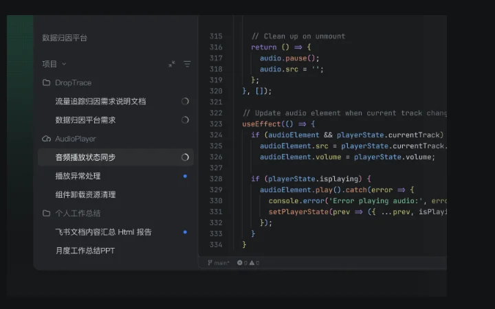
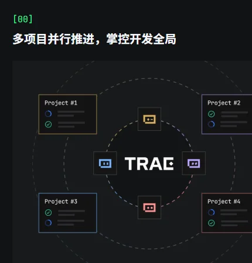
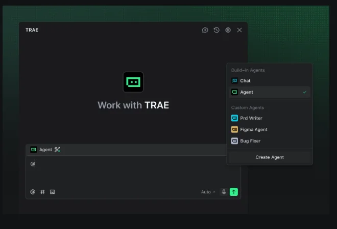

TRAE字节跳动
字节跳动的 AI 开发平台：从编程 IDE 起步，扩展出办公 Agent“TRAE Work”，2026 年并入豆包体系；中国版已把编程和办公合成一个产品。
一页结论
- 国内用户规模领先的 AI 编程产品之一：2025 年底注册用户超 600 万、月活 160 万，2026 年 6 月注册用户达到 1,000 万S7S6
- 从编程扩到办公：2025 年 7 月推出自主编程的 SOLO 模式，2026 年 6 月 SOLO 升级为面向更广泛任务的 TRAE Work，支持文档、设计、视频生成S6S3
- 组织并入豆包：2026 年 8 月，TRAE 与扣子团队整体并入豆包体系，TRAE IDE 与 CLI 作为豆包品牌下的编程产品线继续发展S6
- 中外两套形态：10 月 9 日中国版把 TraeCode 与 TraeWork 合并为一个 TRAE（Agent 模式 + IDE 模式）；国际版仍分为 TraeCode 和 TraeWork 两个产品S6S1
- 模型选择受地缘影响：国际版 2025 年 11 月停用 Claude，改用 GPT、Gemini、Kimi、DeepSeek；中国版以豆包 Seed、GLM、DeepSeek 为主S8S5
01公司介绍
02公司战略
TRAE 在字节内部的定位，从“独立的 AI 编程工具”变成了“豆包工作场景下的编程产品线”。
- 免费拉新：中国版免费可用，每月送积分，邀请好友再送积分；国际版提供免费档S4S2
- 从 IDE 到全链路：中国版把编程、文档、设计放进一个入口，主张“从想法到代码、文档、设计的全链路交付”S4
- 并入豆包：TRAE Work、扣子与豆包在工作场景的能力整合，TRAE IDE 与 CLI 留在编程产品线S6
- 开放的智能体生态：用户可以自定义智能体并分享到市场，通过 MCP 接入外部工具S4S1
03产品定位
| 项目 | 内容 |
|---|---|
| 一句话定位 | 中国版：“你的全链路 AI 开发平台”；国际版：TraeCode 是 AI 编程工程师，TraeWork 是 AI 工作助手S4S1 |
| 目标用户 | 个人开发者为主，也面向非开发者（“无论何种职业”）与企业S4 |
| 核心场景 | 多项目并行开发、自主编程（SOLO）、文档与设计产出、设计稿转代码S4S3 |
| 价格定位 | 中国版免费起步，会员 ¥49/月起；国际版 $20/月起S5S2 |

04产品与主要功能
TRAE 的特点是“IDE + Agent 双模式”：要精细修改就用 IDE 模式，要整体交付就交给 Agent 模式；智能体可以自定义并分享。
产品架构
交互入口
TRAE 桌面端（中国版：Agent 模式 + IDE 模式）TraeCode / TraeWork（国际版）网页端TRAE App（手机）TRAE 插件与 CLI
Agent 层
SOLO 自主编程 Agent内置智能体（对话、Agent）自定义智能体与子 Agent多项目、多 Agent 并行云端任务（2～20 个并发）
扩展层
MCP 外部工具智能体市场TRAE Rules 工作规则插件（手机端也可调用）全局记忆
运行与数据
安全与管控SOC 2 认证（国际版）隐私模式区域化部署企业版与专属版
核心功能


截图来自 TRAE 中国版与国际版官网，2026-11-01。
12 项能力评估
代码审查无或未说明官网未见独立的代码审查产品
定时与自动化无或未说明官网未见定时任务说明
05商业模式
中外两套价格：中国版按积分、价格低，国际版按美元额度，2026 年 9 月涨价后与 Cursor 同价。
| 档位 | 中国版（月费） | 国际版（月费） |
|---|---|---|
| 免费 | ¥0，每月 500 积分，2 个云端任务S5 | $0，只能用 Auto 模式，额度有限S2 |
| 入门 | Lite ¥49（首月 ¥39），2,000 积分S5 | — |
| Pro | ¥99（首月 ¥69），4,000 积分，10 个云端任务S5 | $20，含 $20 用量，全部模型，10 个云端任务S2 |
| Pro+ | ¥239，12,000 积分S5 | $60，含 $60 用量，15 个云端任务S2 |
| Ultra | ¥699，40,000 积分，新模型优先S5 | $200，含 $200 用量，20 个云端任务S2 |
| 企业 | 火山引擎提供企业版S5 | BytePlus 提供企业方案S2 |
国际版年付约省 17%S2。中国版会员使用豆包 Seed 模型享 2.5 折，GLM、DeepSeek 享 5 折S5。
收费逻辑：中国版用免费积分和自家模型折扣拉用户，把用量引向豆包 Seed 模型；国际版按美元额度收费，档位设计（$20 / $60 / $200）与 Cursor 旧套餐基本一致（分析意见）。
06上下游与渠道
07市场表现
JetBrains 2026 年全球调研的工具清单中没有单列 TRAE，暂无可比的第三方使用率数据。
08用户口碑
海外社区对 TRAE 的讨论集中在 2025 年，近期高热度讨论较少（C 级来源，只反映社区情绪）。
09安全合规
10近期动态
11潜在风险分析意见
| 风险 | 表现 | 可能程度 |
|---|---|---|
| 品牌与形态频繁变动 | 一年内 SOLO 独立、改名 TRAE Work、并入豆包、中国版再合并，用户心智难以稳定S6 | 中 |
| 海外模型供给 | 国际版已失去 Claude；若更多海外模型限制中资产品，国际版竞争力受影响S8 | 中 |
| 海外信任 | 中资背景叠加遥测争议，海外企业客户采购顾虑较多S9 | 中 |
| 价格优势减弱 | 国际版涨价后与 Cursor 同价，失去早期的低价卖点S2S11 | 中 |
| 内部资源重心 | 并入豆包后，编程产品线与办公产品的资源分配存在不确定性（分析意见） | 低 |
“可能程度”为基于现有公开信息的判断，不是量化预测。
12综合结论分析意见
优势
- 国内用户规模大，免费策略有效
- 字节自家模型与火山引擎算力支撑，成本可控
- IDE、Agent、办公一体，手机端也能接续任务
劣势
- 海外缺少一线模型，国际版竞争力受限
- 缺少代码审查、定时自动化等交付链路能力
机会
- 借助豆包的海量用户进入工作场景
- 火山引擎的企业渠道
威胁
- 海外模型供给与合规限制
- 形态频繁调整带来的用户流失
对 AI 产品团队的启示
- 免费 + 自家模型折扣是有效的拉新组合：用免费积分拉用户，再用自家模型的大幅折扣把用量引向自己的模型，既控成本又扶持自研模型。
- 编程和办公正在被同一个 Agent 工作台吸收：TRAE 中国版把两者合成一个入口，说明“写代码”和“做文档、做设计”在 Agent 时代可以共用一套交互。
- 出海要先想清楚模型供给：依赖海外模型的产品，供给可能因政策中断；要准备好自研或开源模型替代。
- 组织调整会直接反映到产品：频繁改名、拆合会消耗用户心智，大公司做 AI 产品要给产品形态留出稳定期。
信息缺口
以下信息未找到可靠的公开来源，本报告不做推测。
- 2026 年的月活跃用户数（官方最新只公布到 2025 年 12 月）
- TRAE 的收入与付费用户数
- 国际版当前完整的模型清单（官网只写“全部模型”）
- 国际版是否会跟进中国版、把 TraeCode 与 TraeWork 合并
来源
A 官方 · B 权威媒体或第三方 · C 社区（仅用于口碑与线索）。访问日期均为 2026-11-01。
- S1 · ATRAE 国际版官网（TraeCode / TraeWork）TRAE
- S2 · ATRAE 国际版定价TRAE
- S3 · ATRAE 更新日志TRAE · 2026-06 至 2026-07
- S4 · ATRAE 中国版官网TRAE
- S5 · ATRAE 中国版个人方案与定价TRAE
- S6 · BTRAE（汇总官方公告、年度报告与媒体报道）百度百科
- S7 · BByteDance's AI Coding Tool Trae Annual Report: Monthly Active Users Surpass 1.6 MillionBigGo Finance · 2025-12
- S8 · BByteDance app drops Anthropic's Claude modelsKrASIA · 2025-11
- S9 · CPerformance and telemetry analysis of Trae IDE, ByteDance's VSCode forkHacker News · 2025-07-27
- S10 · B字节跳动旗下 AI 编程工具 TRAE 月活超 100 万，推出 SOLO 模式腾讯新闻 · 2025-07-23
- S11 · CTrae Pricing (2026): Pro $20, Pro+ $60, Ultravibecoding.gallery · 2026